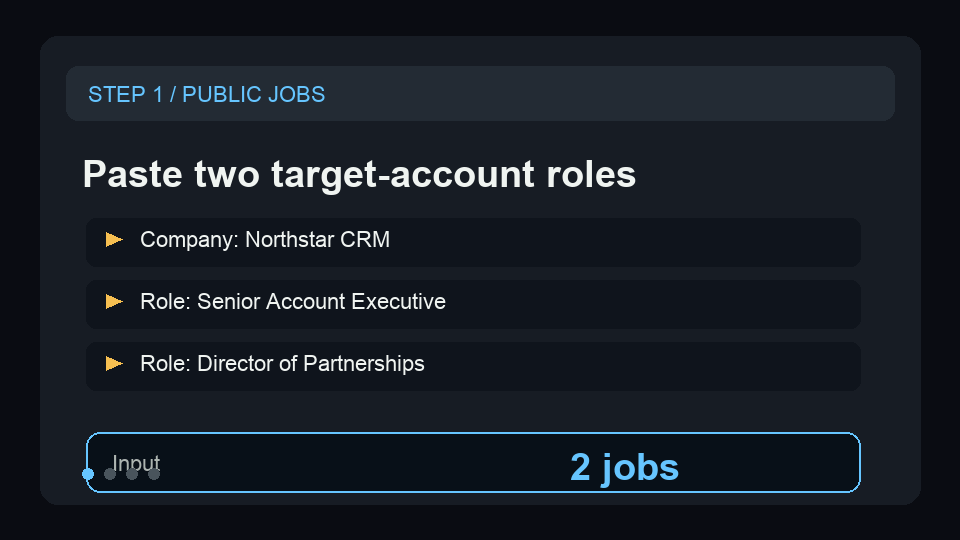

Turn public job records into account triggers.
Use two sample Northstar CRM roles to show department, seniority, signal type, priority score, remote hint, and the next account action.
{kind=link}
Show the account-priority signal in under a minute.
The sample turns revenue and partnership hiring into concrete GTM follow-up signals for a target account.
Paste two jobs
Use the sample company, titles, descriptions, and locations from a public ATS or job-board export.
Run the analysis
Confirm department, seniority, signal type, priority score, remote hint, and account action.
Route the trigger
Send high-priority hiring signals to CRM, Slack, a spreadsheet, or an ABM research queue.
Show public jobs becoming account triggers.
This short GIF previews the sample input, signal fields, account actions, and recurring ABM monitoring path before a buyer opens the Store page.

A tiny sample for quick proof.
Paste this shape into the Store input before wiring a recurring public ATS or job-board export.
{
"defaultCompany": "Northstar CRM",
"jobs": [
{
"companyName": "Northstar CRM",
"title": "Senior Account Executive",
"description": "Help us scale revenue in a new region and build pipeline with mid-market SaaS buyers.",
"location": "Remote - US"
},
{
"companyName": "Northstar CRM",
"title": "Director of Partnerships",
"description": "Own channel partnerships, agency alliances, and co-selling motions for a fast-growing CRM platform.",
"location": "Austin, TX"
}
],
"maxJobs": 2
}What the buyer should inspect.
This public-safe output snapshot shows the fields that turn hiring records into GTM action.
[
{
"status": "succeeded",
"recordIndex": 1,
"billingEventName": "hiring-signal-analyzed",
"companyName": "Northstar CRM",
"jobTitle": "Senior Account Executive",
"department": "sales",
"seniority": "senior",
"signalType": "expansion_signal",
"priorityScore": 95,
"remoteHint": true,
"accountAction": "Flag Northstar CRM as expanding; enrich the account and monitor adjacent revenue roles this week."
},
{
"status": "succeeded",
"recordIndex": 2,
"billingEventName": "hiring-signal-analyzed",
"companyName": "Northstar CRM",
"jobTitle": "Director of Partnerships",
"department": "partnerships",
"seniority": "director",
"signalType": "gtm_investment",
"priorityScore": 90,
"remoteHint": false,
"accountAction": "Route Northstar CRM to partnership-led outbound with channel and agency messaging."
}
]Start with the smallest useful sample.
Start with one public job search that turns into account-priority signals. Copy the sample, inspect the action fields, then open the Store run when the output matches the workflow you need.
Run a sample
Use two public job records before connecting a broader dataset.
Inspect action fields
Check department, seniority, signal type, priority score, remote hint, and account action.
Route the output
Move useful rows into CRM, Slack, a spreadsheet, or an ABM research queue.
Need this adapted before the first run?
Send a public-safe workflow request if the sample, setup, or output handoff needs a variant.
Keep requests public-safe: no credentials, private URLs, customer data, emails, or sensitive business data.